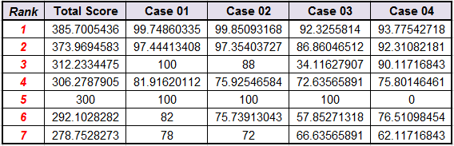
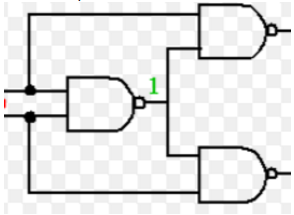
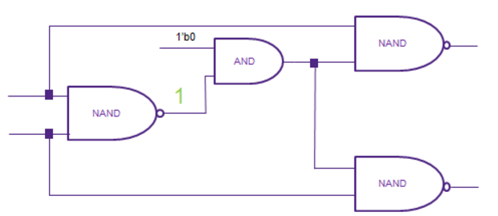

ICCAD 2016 Contest
Identical Fault Search
Tangent Wei and Luke Lin , Synopsys Taiwan Co., Ltd., Taiwan
I. Abstract
Injecting faults into designs is a way to qualify a verification environment. To improve the performance of a qualifying process, we need to remove identical faults. The problem will provide some faulty design cases; the contestants must identify all sets of identical faults. The judgment will be based on correctness, execution time and memory usage. The topic mainly belongs to gate level design.
II. Problem Description
For a given design, called fault-free design, we can inject one or more faults into it, called faulty design. In this contest, we inject only one permanent fault into a fault-free design at a time. Normally, some output port values will be affected by an injected fault. If the verification environment can be aware of this output difference, it will be a good verification environment.
However, some injected faults will cause the same output difference. That is, no matter what the input port values are, the output differences caused by these faults are the same. Because the output values of the faulty designs with different faults are all identical whenever their inputs are the same, we call these faults identical faults and only one of them is instrumental in qualifying a verification environment.
Example:
The design case is the CRC logic, crc.v, is adapt from the eth_crc module of the Ethernet MAC 10/100 Mbps design of the OpenCores website. We take the following statement of this design as example.
$$assign\ next\_crc[1]= enable\land(data[1] \oplus data[0] \oplus curr\_crc[28] \oplus curr\_crc[29])$$
Fig.1
Assume we inject 2 faults. One is replacing the driver operator of signal 502 by NXOR as below, called Fault 1.
Fig.2
Another one is the replacing the driver operator of signal 503 by NXOR as below, called Fault 2.
Fig.3
The faulty design of Fault 1 and Fault 2 are the same with the following faulty design.
Fig.4
Therefore, Fault 1 and Fault 2 are identical to each other so we call them identical faults in one identical fault group.
Program Requirements:
The contestant’s program needs to load and parse the given gate-level design to get the design knowledge and then generate the faulty design for the selected fault in the fault description file. After found an identical fault group by the contestant’s algorithm, the contestant’s program also needs to verify each pair of faults which are found in one identical fault group being identical. Finally, output all found identical fault groups as the output format.
Input:
For the gate level design file, there are some comments, started by the ‘#’ for one line, in the beginning of this file. These comments give a brief description of this design.
After these comments, the design is described by following 4 parts. Input ports, output ports, D-type flip-flops, called “DFF”, and then gates. To simplify the format, only “BUFF” and “NOT” has one operand and other gates always have 2 operands.
For each input port, we use “INPUT($signal_id)” to indicate it, where the “$signal_id” is the signal identifier of the input port. Every signal identifier is an integer.
For each output port, we use “OUTPUT($signal_id)” to indicate it, where the “$signal_id” is the signal identifier of the output port.
For each D-type flip-flop, we use “$signal_ id1 = DFF($clock, $reset, $enable, $signal_id2)” to indicate it, where the “$signal_id1” is the output signal identifier of this D-type flip-flop and the forth parameter, “$signal_id2”, is the input signal identifier of this D-type flip-flop. The first one, “$clock”, is the clock signal of the DFF. The second one, “$reset”, is the reset signal of the DFF. The third one, “$enable”, is the enable signal of the DFF.
For each gate, we use following format for it. The “$signal_id1” is the output signal of the gate. The “$signal_id2” and “$signal_id3” are the inputs of the gate.
- $signal_id1 = BUFF($signal_id2)
- $signal_id1 = NOT($signal_id2)
- $signal_id1 = AND($signal_id2, $signal_id3)
- $signal_id1 = NAND($signal_id2, $signal_id3)
- $signal_id1 = OR($signal_id2, $signal_id3)
- $signal_id1 = NOR($signal_id2, $signal_id3)
- $signal_id1 = XOR($signal_id2, $signal_id3)
- $signal_id1 = NXOR($signal_id2, $signal_id3)
Take the above mentioned statement as example. Its related gate-level codes are as below:
…
INPUT(100)
INPUT(101)
…
INPUT(105)
…
INPUT(228)
INPUT(229)
…
OUTPUT(301)
…
301 = AND(105, 504)
…
502 = XOR(100, 101)
503 = XOR(228, 229)
504 = XOR(502, 503)
For the fault description file, there are 3 columns in it as below.
1 100 SA0
2 100 SA1
3 100 NEG
4 101 SA0
...
The first column is the fault identifier of this fault.
The second column is which signal we inject this fault.
The third column is the fault type of this fault.
In summary, we have 11 kinds of fault as the below table. We may not use all 11 kinds of faults on every signal.
| Name | Description |
| SA0 | Stuck at 0 |
| SA1 | Stuck at 1 |
| NEG | The negative value of the signal |
| RDOB_AND | Replace Driver Operator By AND |
| RDOB_NAND | Replace Driver Operator By NAND |
| RDOB_OR | Replace Driver Operator By OR |
| RDOB_NOR | Replace Driver Operator By NOR |
| RDOB_XOR | Replace Driver Operator By XOR |
| RDOB_NXOR | Replace Driver Operator By NXOR |
| RDOB_NOT | Replace Driver Operator By NOT only when the driver operator is BUFF |
| RDOB_BUFF | Replace Driver Operator By BUFF only when the driver operator is NOT |
We use line 16, 17, 18 and 19 of the fault description file in the hyperlink as examples to show how we inject one fault at a time into the design. As the line 16 of the fault description file, if we inject one Stuck At 0, called “SA0”, fault on signal 502, its faulty design is as below.
Fig.5
The “stuck at 0” fault will force its signal always being 0.
As the line 17 of the fault description file, if we inject one Stuck At 1, called “SA1”, fault on signal 502, its faulty design is as below.
Fig.6
The “stuck at 1” fault will force the value of its signal always being 1.
As the line 18 of the fault description file, if we inject one Negative, called “NEG”, fault on signal 502, its faulty design is as below.
Fig.7
The “Negative” fault will force its signal value always being its negative one.
As the line 19 of the fault description file, if we inject one Replace Driver Operator By AND, called “RDOB_AND”, fault on signal 502, its faulty design is as below.
Fig.8
The “Replace Driver Operator By” fault will replace the original driver operator of its signal by the given operator. In this case, the driver operator of 502, XOR, is replaced by the given operator, AND.
Outputs:
- All id pairs of the identical faults.
The identical faults are put into fault groups and each id pairs should be printed out in lexicographical order, the left one is the smaller one. For example, if {1,4,9} and {6,10} are two groups of identical faults, then the id pairs of the identical faults should be printed out as follows:
-
1 4
1 9
6 10
where the two id’s of a pair are separated by a space character. Please make sure your program follow this format.
The output text file should be named “identical_fault_pairs.txt”.
Due to the Contestant’s process may crash or cost too much time so that we have to kill it, we also strongly suggest that Contestant’s program should always flush its result into the output text file ASAP. Therefore, we can still get some results from the Contestant’s process even it was killed by us.
Scoring:
The correctness of your result constitutes 60%, runtime constitutes 30% and memory usage constitutes10%.
Each correct reported identical fault get 10 points. Any report identical fault, which is not a real identical fault, minuses 5 points. Any extra identical fault group will minuses 5 points.
For example,
Assume { 1,4,9 } and { 6,10 } are two groups of identical faults.
If Contestant’s result is, (1, 4), (4,9), (6,10), it is also correct although it isn’t sorted. It gets 50 points
If Contestant’s result is, (1, 4), (6,10), (1, 9), it is also correct although it isn’t sorted. It gets 50 points
If Contestant’s result is, (1, 4), (6,10), it reports 4 correct identical faults.
It will get 40 points.
If Contestant’s result is, (1, 4), (1, 9), it reports 3 correct identical faults.
It will get 30 points.
If Contestant’s result is, (1, 4), (4,9), (6,10), (10, 13). The fault 13 is reported as an identical fault but it isn’t.
It will get 50 points and then minus 5 points for fault 13. Its final score is 45.
If Contestant’s result is, (1, 4), (4,9), (10, 13). The fault 13 is reported as an identical fault but it isn’t.
In this case, even fault 10 belongs to the identical fault, the Contestant didn’t connect it to the correct fault.
Therefore, fault 10 cannot be a correct one in this case.
It will get 30 points from {1, 4, 9} and then minus 5 points for fault 13. No point for fault 10.
Its final score is 25.
Assume we have a long identical fault group { 1, 2, 3, 4, 5, 6 }
If Contestant’s result is, (1, 2), (1, 3), (1, 4), (1, 5) and (1, 6), It gets 60 points.
If Contestant’s result is, (1, 2), (1, 3), (4, 5), (4, 6), the one group is split into 2 groups, {1, 2, 3} and {4, 5, 6}.
It will get 60 points and then minus 5 points for the 1 extra group.
Its final score is 55.
If Contestant’s result is, (1, 2), (3, 4) and (5, 6), the one group is split into 3 groups, {1, 2}, {3, 4} and {5, 6}.
It will get 60 points and then minus 10 points for the 2 extra groups.
Its final score is 50.
Contest Objectives:
Assume we inject N faults into the fault-free design, there will be N*(N-1)/2 fault pairs. Therefore, there are 2 main contest objects. The first one: How to divide the given design into several suitable partitions so that we can divide and conquer this problem. The second one: A high performance algorithm to verify some given faults being identical or not.
Problem Guidance:
At the start, we suggest contestants write a gate-level design parser to get the fault-free design knowledge. Contestants also need to write a fault reader to get the faulty design knowledge from the currently selected fault and the fault-free design knowledge. Contestants are encouraged to find out the necessary design knowledge for a high performance algorithm to get all possible identical fault groups and another high performance algorithm to verify the just found possible identical fault groups. Finally, output the result as the output format.
Fig.9
III. Test Case
- To simplify the verification process, please use the same execute file name, “IF_Searcher”, whose 1st argument is the gate level design file name and the 2nd argument is the fault description file name.
- Sometimes, your program may crash or it costs too much time so that we have to kill your process. To prevent from getting empty output file, please always flush everything that your algorithm found. At the end, please sort your result as what’s we expected.
IV. Reference
Survey of method:
- https://www21.in.tum.de/~lammich/2015_SS_Seminar_SAT/resources/Equivalence_Checking_11_30_08.pdf
- http://repository.cmu.edu/cgi/viewcontent.cgi?article=1148&context=compsci
Use SAT:
- http://ieeexplore.ieee.org/stamp/stamp.jsp?tp=&arnumber=1382542
- http://fmv.jku.at/biere/talks/Biere-SAT05-talk.pdf
Use BDD:
- https://www.cs.ox.ac.uk/files/4309/97H1.pdf
- http://ieeexplore.ieee.org/stamp/stamp.jsp?tp=&arnumber=628891
Use SAT and BDD:
- https://www.research.ibm.com/haifa/projects/verification/SixthSense/papers/brn_iccd_00.pdf
- http://ieeexplore.ieee.org/stamp/stamp.jsp?tp=&arnumber=1097859&tag=1
V. Alpha Test

VI. Beta Test

VII. FAQ
-
What do you expect from the participants’solutions?
The purpose of this problem is to figure out all identical fault groups in limited time. We like to know if contestants can a good solution to quickly group identical faults, especially, the faults can be injected in a large design with flip-flops. -
Is it safe to assume that the different fault types (SA0,SA1,NEG) on the same net will never be equivalent?" More clearly, is a circuit possible that makes two different types of fault on a particular net, have an identical output response?
Due to the given gate-level design is NOT optimized, I cannot say that a circuit is impossible that makes all kinds of "two different types" of fault on a particular net, have an identical output response. Some pairs may be definitely NOT identical to each other but some don't.
For example,
701 = NOT(700)
702 = XOR(700, 701) # 702 will be always 1'b1
ð "SA0 fault on 702” == “NEG fault on 702” == “RDOP_NOXR fault on 702” =\= fault-free design. -
I would like to know if there is a time limit to generate output for problem A?
The time limitation of each test case is 6 hours. - According to the problem A of the INPUT part: After these comments, the design is described by following 4 parts. Input ports, output ports, D-type flip-flops, called “DFF”, and then gates. To simplify the format, only “BUFF” and “NOT” has one operand and other gates ”always” have 2 operands. I wonder what does this "always" mean. Does it mean "only" or "at least"?
It means “only”.
Other gates always have exactly 2 operands. They never have only one operand and never have more than 2 operands. -
I am going though the fault description file. Which has following format:
(FAULT_ID NET_ID FAULT_TYPE)
For net with multiple sinks, how should we consider the fault? Do we need to consider fault at "source pin" and each "sink pins".. or either of them? For example:

For above circuit at net (1) -> SA0 Fault How should we consider the SA) fault? At all the pins (source and sinks) or either one of them?
For the SA0 of the signal 1, it will be as following picture:
 -
I see a gate level design is a format with .isc file (crc.isc). But when I open it by notepad ++, I see it is a format with .bench file. I am not clear. Please explain it help me.
The content of crc.isc file should be clear and easy to understand. If you have any questions for a specific description in the file, please feel free to let us know. -
In this file crc.isc, I see net 572 have two Outputs. It's mean the 527 net will be controlled with 2 drivers. I can't determine value logic.
"....
527 = XOR(230, 526)
306 = XOR(403, 202)
527 = XOR(103, 102)
...."
It is a bug. The attached one is the modified version. (We have replaced the file on 2016/03/25) -
What will be the initial state of DFF?
The initial state of DFF is 0. -
Is parallel programming allowed?
The contestant teams only need to submit their binary codes for evaluation. Please make sure that your binary code can be executed in the CIC machine. The detailed specification of the CIC machine will be announced soon. Moreover, we will create an CIC account for each contestant team in this May. -
what maximal size of circuit in testbenches?
(1) We have 4 lines of comments in the .isc file and these 4 line are about the size of the signals used in this design
For example,
# 35 inputs -- clock(1), reset(1), input_data(33)
# 32 outputs -- output_signal(32)
# 0 D-type flip-flops
# 209 gates ( 21 BUFFs + 12 NOTs + 17 ANDs + 19 NANDs + 24 ORs + 26 NORs + 37 XORs + 53 NXORs )
(2) There is no any obviously maximum used in the Problem A.
-
I am wondering if we need to consider the fault in a "sequential way" ? The released sample test case design01.isc mentions about Flip-Flop(FF) components. However, the total circuit never appears FF component. Do we need to consider FF behavior in the future?
We will use the Flip-Flop(FF) component in later test cases. -
Is it mandatory to include verification step in the program? If it is, is there any method to distinguish between problem-solving step and verification step only with .exe file? (If not, in my opinion, verification step will not be well-implemented in the program for time efficiency.)
No. We will check all your reported fault-pairs for the correctness. -
The output format you provided in website seems ambiguous. For example, if { 1,4,9 } and { 6,10 } are two groups of identical faults, than is following output still legal?
1,4
4,9
6,10
We think the red part of output might be the same meaning as the output on the website. Are we right?
Yes. Due to we may kill the contestant's process if it costs too much time, we will not request contestant's result will be sorted or the result will be in particular pair order or the result contains particular pairs. For now, the only one format rule is that the left one is the smaller one of the every fault pair. You may re-check the final updated version of “Outputs:” and “Scoring:” parts. -
Clock signal seems useless in this contest, right? In other words, FFs output value will not be affected by the value of clock signal.
The clock signal is useless in this contest. However, please assume the “clock” signal in the form of a square wave with a 50% duty cycle, with a fixed, constant frequency. - The reset signal value of the FF is 1 → the output value of the FF is 0 ? Yes.
-
The reset signal value of the FF is 0 → the output value of the FF depends on the value of enable signal?
Yes. -
The enable signal value of the FF is 1 → the output value of the FF is the same as the input value of the FF?
Yes. -
The enable signal value of the FF is 0 → the output value of the FF keeps its original output value ?
Yes. -
In problem 5 situation, how can we determine which value is the original output value of the FF?
Please assume that there are some reset cycles before searching the Identical Faults. After these reset cycles, all output signals of DFFs are 0. -
Could you explain - is it possible to submit python script instead of binary executable for alpha submission. It was easier for us to make python prototype calling some binary files from within, instead of making everything on c++ from the very begining. README text file will be provided. Running the script will be easy, somewhat like:
Please confirm your Python script can be executed in the CIC machine. Note that the Python script is allowed for Alpha Test Only. The Python script cannot be used for the final evaluation. -
Are the provided test cases comparable to the biggest cases in actual final test?
The biggest final one is about 10X or more than the current attached cases. -
The identical faults are defined that no matter the input patterns are, the output differences are the same. How to judge the identical faults in sequential circuit? Can the different values captured by flip-flop (at PPO) means they are different?
The values of primary outputs in 2 identical faults must be the same at every clock cycle. The test cases may have some gates among primary outputs and flip-flops. -
Can we submit the source code with other text file library, which can help to build the circuit?
No. please make sure your submitted file is executable as the one in the “Program Requirements”. -
I found that the test case example,
http://cad-contest-2016.el.cycu.edu.tw/problem_A/case/crc_isc.rar,
and other test cases have some format differences, e.g.,
# 37 inputs -- data(4), enable(1), curr_crc(32)
# 35 inputs -- clock(1), reset(1), input_data(33).
Would the hidden cases use the format of the case example?
Yes. -
Are the "reset", "enable" of DFF's inputs always the primary input of the circuit or they could be any output of a gate?
The Verilog code of the DFF is below:
For“signal_ id1 = DFF(clock, reset, enable, signal_id2)”,
Its Verilog code is as below:
always@(posedge clock or negedge reset)
if (!reset) signal_ id1 <= 0;
else if (enable) signal_ id1 <= signal_id2;
-
Will the gate level file always follows the order of INPUT, OUTPUT then DFF?
Yes. However, the DFF does NOT always exist. Some Design doesn’t have any DFF as the case01 and case02 of the “III. TestCase” -
I wonder if that there will be RDOB fault for DFF for example:
In .isc file : 4207 = DFF(0, 601, 1202, 5409)
In fault file: 4207 RDOB_BUFF
There is no such kind of fault. For DROB_BUFF, it is only occurs for BUFF.
For example,
In .isc file: 40003 = BUFF(50020)
In fault file: 50020 RDOB_BUFF
-
I was wondering how good the resulting scores are. Any reference score, the highest one, for each test cases?
The full marks of Case01 is 5810.
The full marks of Case02 is 6730.
The full marks of Case03 is 7720.
-
According to the scoring : “Each correct reported identical fault get 10 points. Any report identical fault, which is not a real identical fault, minuses 5 points. Any extra identical fault group will minuses 5 points.” Based on the full marks for each test case, shall we have 581, 673 and 772 id pairs of the identical faults, respectively ? Would you give us the resulting for each test case?
We do not announce the detailed results. -
We know that the runtime of our result constitutes 30% and memory usage constitutes10%. How can we calculate the score according to the runtime and the memory usage?
We will according to the average and standard deviation of the execution time to give the score. For example, the average is 10 seconds and the standard deviation is 2. If the execute time is smaller (the average minus 2 * standard deviation), which is 10 – 2*2 = 6, it gets 100% scores.
Between 2 and 1 standard deviation, which is between 6 and 8, it gets 80% scores.
Between 1 and 0 standard deviation, which is between 8 and 10, it gets 60% scores.
Between the average and ( the average plus 1 standard deviation), which is 10 and 12, it gets 40 % scores.
Between plus 1 and plus 2 standard deviations, which is between 12 and 14, it gets 20% scores.
Over (the average plus 2 * standard deviation), which is bigger than 14 seconds, it gets 0% scores. The main point is that the score of execution time and memory usage is dependent on the average and standard deviation of them. The above numbers, 6, 8, 10, 12, 14, etc. are used for example.
-
Can you provide the evaluation result of Beta test that the score is calculated by all grading standards - the correctness, runtime and memory usage.
We mean the result of Beta test is the same as the final test.
Yes. I will. -
Will all of the reset and enable wires of DFFs given in the test case (hidden cases included) be primary input? or can they be the outputs of some other gates?
All reset and enable wires of DFFs are always the primary input. -
When will the output of a DFF always be 0? when the reset is 1 or when the rest is 0? Your clarifications in FAQ15 and FAQ 25 are contradict.
Please follow the Verilog code in 25. -
Unfortunately we don't understand answer to question: "25. Are the "reset", "enable" of DFF's inputs always the primary input of the circuit or they could be any output of a gate?". Can you please give us more formal answer and more detail?
In the design cases of the problem A, the clock and reset signals of DFF are from the primary inputs. There is no gated clock or reset signal in our test cases. -
I wonder that are these scores also include runtime and memory usage performance? Or do they just show the correctness without considering other constitutes?
Another question, are the full marks of the testcases indicates the amount of grouped faults? if not, how can we know the correct amount of grouped faults of each testcases?
1. These scores also include runtime and memory usage performance.
2. How can we know the correct amount of grouped faults of each testcases?
A. You can use some formal tools to check all pairs of given faults of the published 4 cases in the website and then get a golden result.
B. After A, you can check your grogram result with the result of A to know the correctness.
-
Is 100 the full score of each testcase? Does it mean the answers are all correct? How good the performance of runtime and memory usage be can get 100 score?
- Yes.
- Please reference the “Scoring” part of the Problem A in the website.
60% – the score for the correctness of your result
30% – the score for the runtime
10% – the score for the memory usage - Please reference the 30-th item in the “FAQ” of the Problem A in the website.
-
You provided full marks of three cases on the website( Q28 ). Are they the score of gloden of each cases? The full mark of case01 had a big gap with our golden result. However, our golden results of case02, case03 are the same as yours. Can you check the full mark of case01 again?
All cases in Q28 are not the cases in the “III.Test Case”. The case 1 and 2 of Q28 are similar to the case01 and case02 of the “III.Test Case”. The case 3 of Q28 is similar to the case03 and case04 of the "III.Test Case". -
The scoring of correctness is different from the scoring of runtime and memory usage(different from the Q30), right ? I guess that it is scored by the percentage you got in the full mark. For example, if we got 1234 points at the correctness, and the full mark is 2000. Finally, our correctness' score is ( 1234/2000 )*60 ?
Yes. The scoring of the correctness is also in the detail page. -
Will you release additional cases for us to test ?
No. All cases of the final test will be similar to the cases of “III.Test Case” but bigger. -
Will the primary input directly be a primary output?
i.e. INPUT(500)
OUTPUT(500)
fault: 1 500 SA0
It may occur with a very little probability. -
Since we've known the answer of testcase 1~4, can we just print out the answer to save runtime?
No. You may have some skills to check the given case and then provide the previous answer if the given case is known. However, it is not the purpose of this contest.
To avoid this issue, we won't use any published cases in the website. In previous alpha and Beta test, only one case is the same with one of the published cases. Others are similar not equal to the published cases. Therefore, at most one case can be used this kind of trick. However, no team has more better performance on this case than other cases. No public cases will be used in the final test so there is no chance to use such trick in the final test. -
You say that no public cases will be used in the final test. But can you please upload thees cases on the web-site after final?
Okay. -
Can you say me please about circuit structure? I am interesting in feedback loop in sequence circuit. Are there feedbacks?
No feedback circuit. -
Say me please about 40th question from FAQ (problem A). You say about small circuit (one net) that "It may occur with a very little probability." OK But there is a logical question: Which kinds of faults can influence on circuit and how?
For the 40th FAQ, I mean the chance of the mentioned case in the 40th FAQ is very little. However, whenever it occurs, the SA0 fault on the signal 500 called fault 1 in the 40th FAQ case, it will affect the design output as an error. -
In the gate level design file, there are no information about the number of the enable signal from the comments. Will there always be only one enable signal? Or we have to know that by reading the whole file?
You have to know that by reading the whole file.